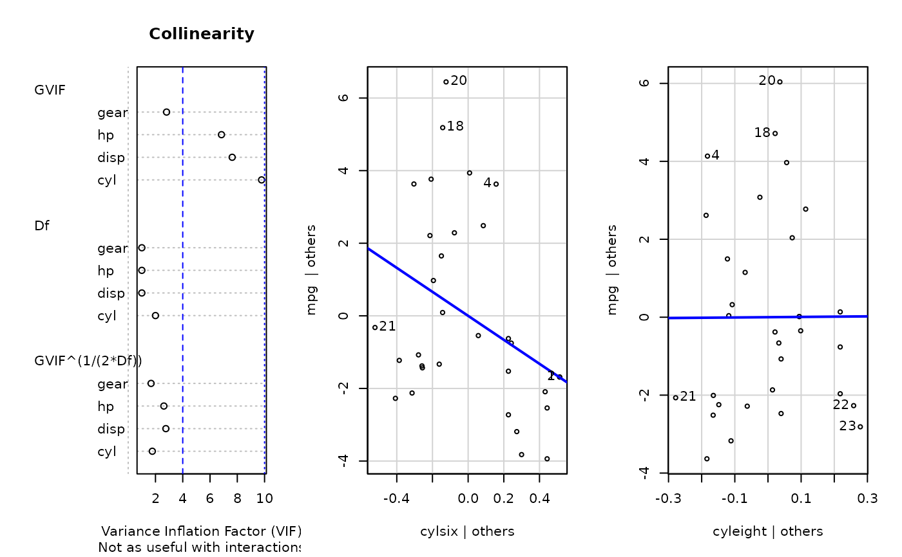
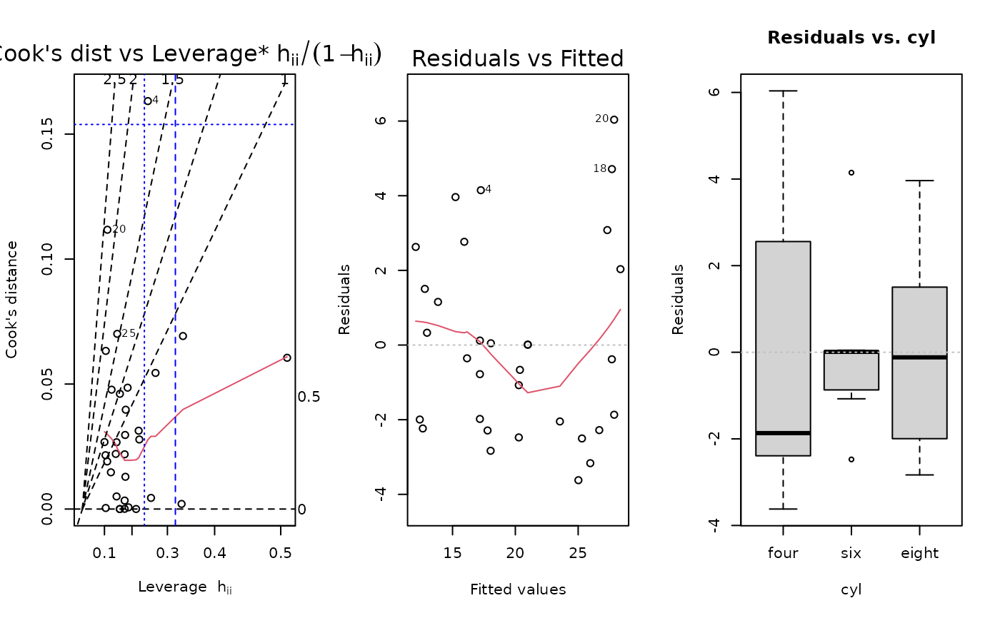
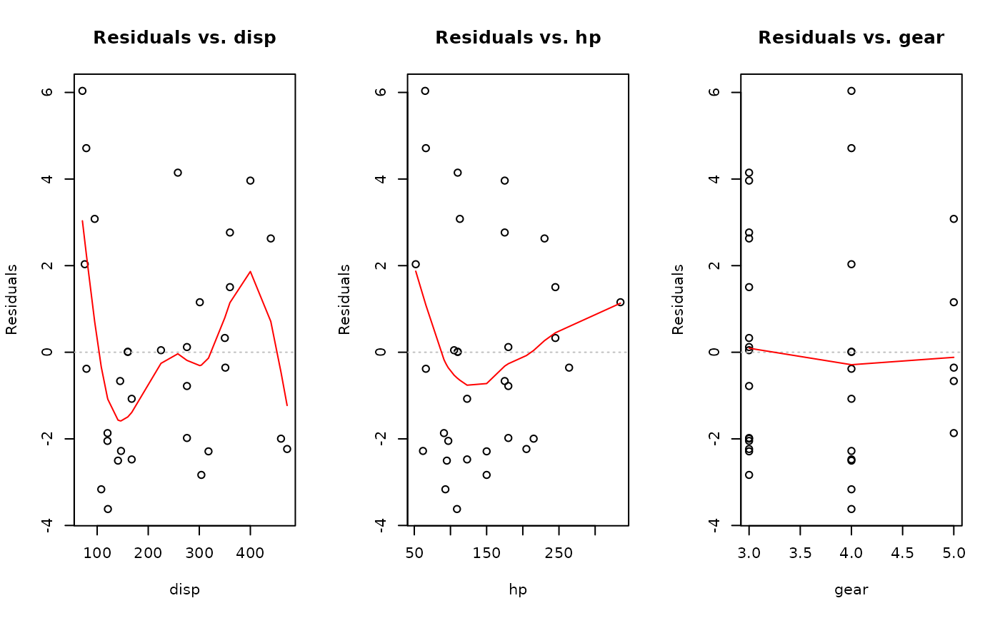
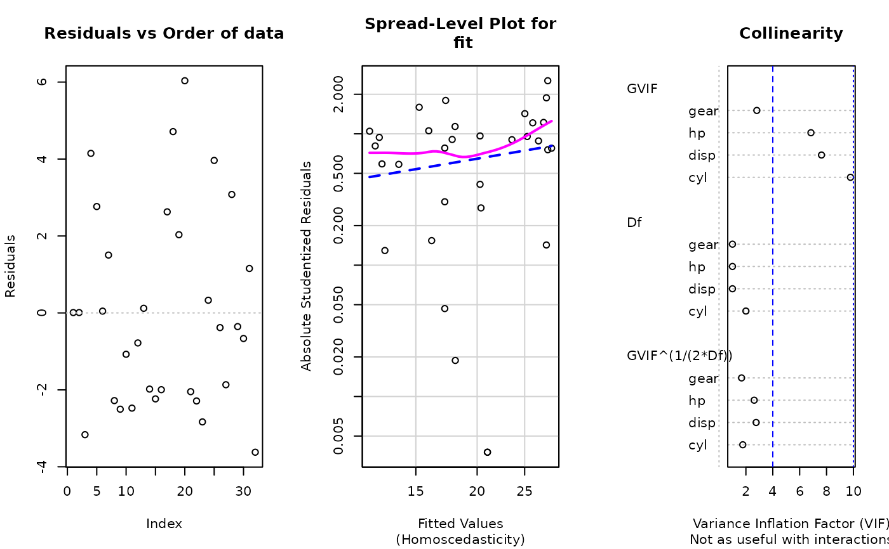
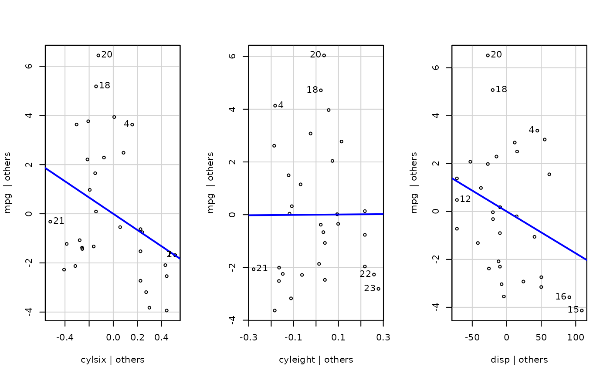
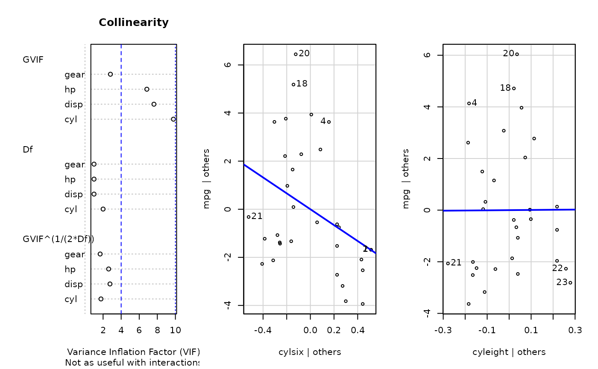
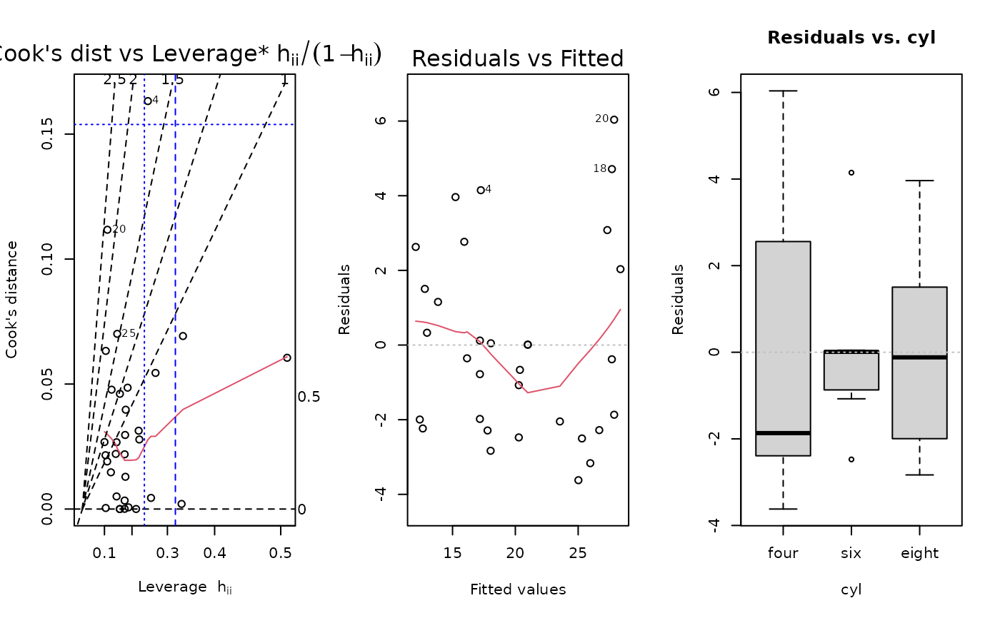
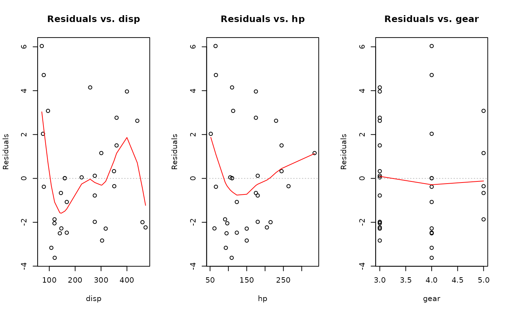
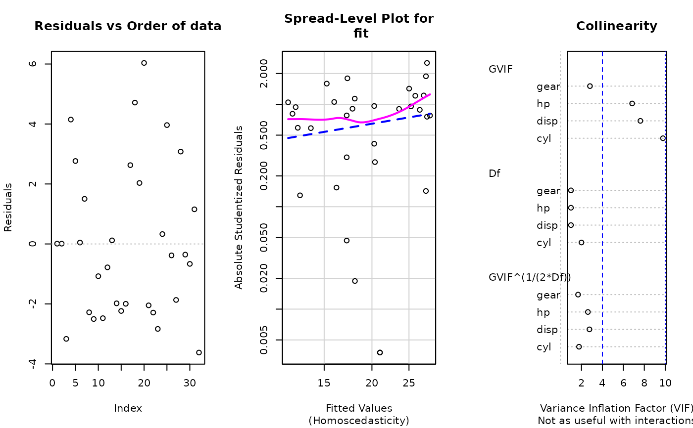
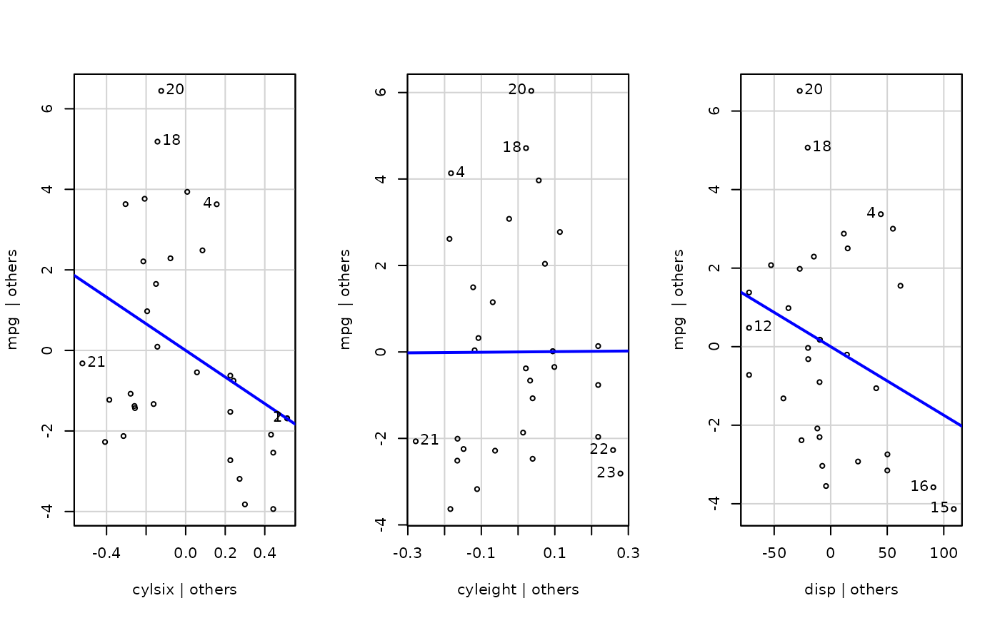

Plotting residual diagnostics for an lm() object.
Source:R/e_plot_lm_diagnostics.R
e_plot_lm_diagnostics.RdPlotting residual diagnostics for an lm() object.
Arguments
- fit
linear model object returned by lm()
- rc_mfrow
number of rows and columns for the graphic plot, default is c(1, 3); use "NA" for a single plot with 3 columns
- which_plot
default plot numbers for lm()
- n_outliers
number to identify in plots from lm() and qqPlot()
- sw_qqplot
T/F for whether to show the QQ-plot
- sw_boxcox
T/F for whether to show Box-Cox transformation
- sw_constant_var
T/F for whether to assess constant variance
- sw_collinearity
T/F for whether to assess multicollinearity between predictor variables
- sw_order_of_data
T/F for whether to show residuals by order of data
- sw_addedvar
T/F for whether to show added-variables plot
- sw_plot_set
NULL to accept other plot options, or "simple" to exclude boxcox, constant var, collinearity, order of data, and added-variable plots. "simpleAV" to add back in the added-variable plots. "all" includes all possible plots in this function.
Value
NULL, invisibly
Examples
fit <- lm(mpg ~ cyl + disp + hp + gear, data = dat_mtcars_e)
e_plot_lm_diagnostics(fit)
#> Warning: "add" is not a graphical parameter
 #> Non-constant Variance Score Test
#> Variance formula: ~ fitted.values
#> Chisquare = 2.67906, Df = 1, p = 0.10168
#> Warning: Note: Collinearity plot unreliable for predictors that also have interactions in the model.

mod <- stats::formula(mpg ~ cyl + disp + hp + gear)
fit <- lm(mod, data = dat_mtcars_e)
e_plot_lm_diagnostics(fit)
#> Warning: "add" is not a graphical parameter
#> Error in eval(mf, parent.frame()) : object 'mod' not found


#> Non-constant Variance Score Test
#> Variance formula: ~ fitted.values
#> Chisquare = 2.67906, Df = 1, p = 0.10168
#> Warning: Note: Collinearity plot unreliable for predictors that also have interactions in the model.


#> Non-constant Variance Score Test
#> Variance formula: ~ fitted.values
#> Chisquare = 2.67906, Df = 1, p = 0.10168
#> Warning: Note: Collinearity plot unreliable for predictors that also have interactions in the model.

mod <- stats::formula(mpg ~ cyl + disp + hp + gear)
fit <- lm(mod, data = dat_mtcars_e)
e_plot_lm_diagnostics(fit)
#> Warning: "add" is not a graphical parameter
#> Error in eval(mf, parent.frame()) : object 'mod' not found


#> Non-constant Variance Score Test
#> Variance formula: ~ fitted.values
#> Chisquare = 2.67906, Df = 1, p = 0.10168
#> Warning: Note: Collinearity plot unreliable for predictors that also have interactions in the model.

